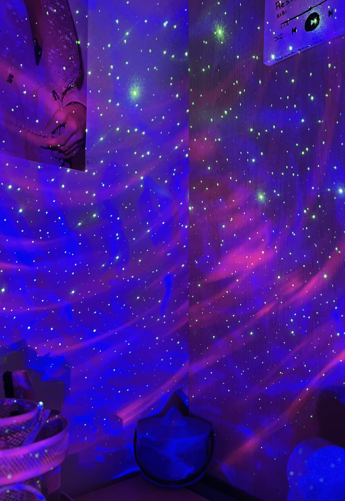

Sometimes we need some help picking out a book to read. Luckily for you,
I have a solution! Choose a category, and see its most popular books (which are all
available as audiobooks on Spotify). Happy reading! :)
Romance SectionMystery/Thriller SectionClassics Section

Darleine's LibrarySci-Fi/Fantasy SectionChoose Your Own Adventure